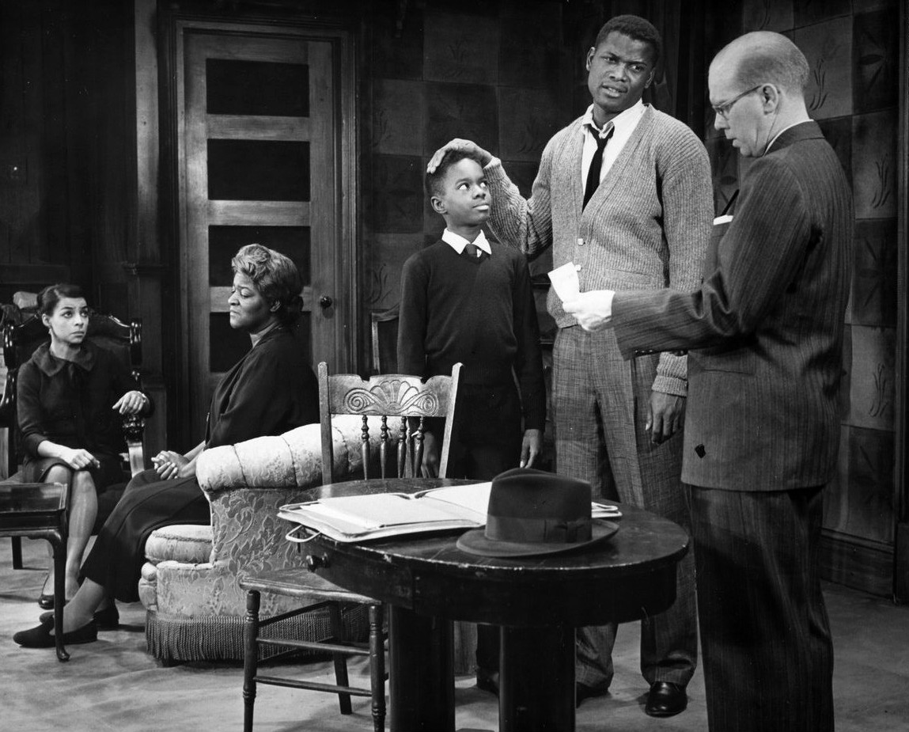
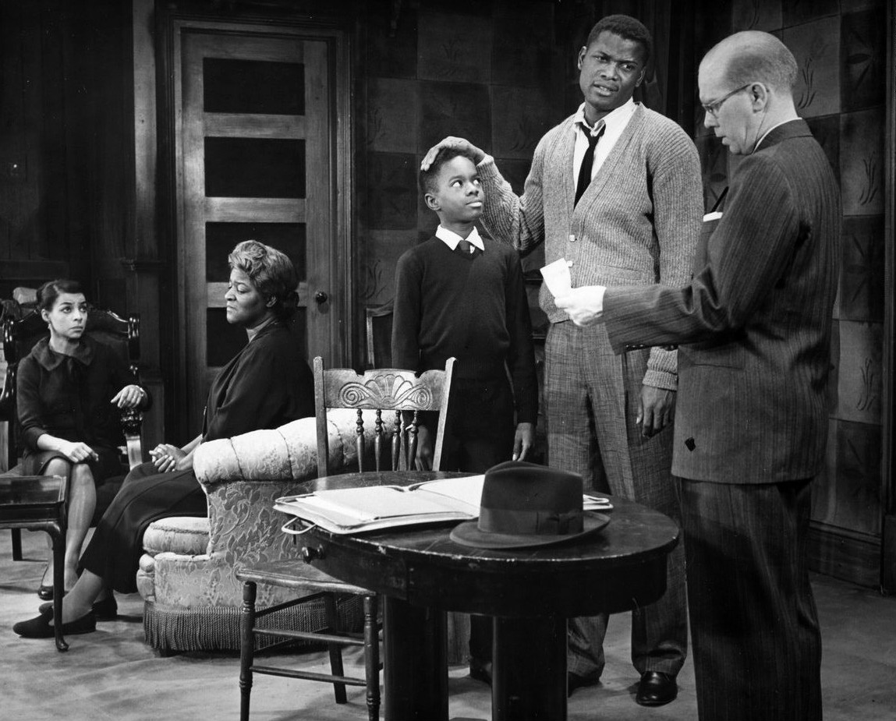

The Raisin in the Sun
The matriarch of the family, Mama , desires to purchase a home in completing her dream she once shared with her husband. The Mother's son , who is Walter Lee , has different desires in how he would utilize the money in investing in a liquor store with his close friends.
Preview
"One of a handful of great American plays--it belongs in the inner circle, beside Death of a Salesman, Long Day's Journey into Night, and The Glass Magazine."---The Washington Post
Development
A Raisin in The Sun What will Transpire , in the lives of this family?
Support
Come and Enjoy The Raisin and The Sun!
Theatre Company Featured Show
Come and Enjoy the Raisin and The sun with your family? A Raisin and The Sun portrays a few weeks in the life of the Youngers, who are a Black family living on the South Side of Chicago within the 1950s. The Youngers which are about to receive an insurance check for $10,000. Walter Lee, The son believes this investment could resolve his family monetary issues. Nevertheless, his wife Ruth, firmly agrees with Walter's Mother, Nonetheless,, while hopes how she and Walter may offer additional space including opportunity for their Son Travis. Notwithstanding Walter's sister Beneatha would very much like to use the monetary resources because she would like to go to Medical School tuition. Learn More
Text for Show List: A Raisin In The Sun April 6, 2020 - March 20, 2020 Griot Theatre 233 State St Chicago,IL $75